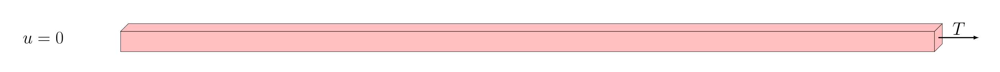

Elastic Beam: Updated Mesh#
Description of the problem#
This example aims in providing an example of a 3D beam of dimensions 40 x 1 x 1.

The beam is clamped on its left face (Dirichlet boundary condition) and a vertical traction force is applied on its right face (Neumann Boundary condition).
The objective is to find the resulting displacement.
Implementation#
Libraries#
Computing the Finite element problem within FEniCSx in python requires to load the libraries:
import dolfinx
from dolfinx.fem.petsc import NonlinearProblem
from dolfinx.nls.petsc import NewtonSolver
import ufl
import basix
import petsc4py
import mpi4py
import numpy
import pyvista
One can assess the version of FEniCSx with the following:
print("Dolfinx version is:",dolfinx.__version__)
Mesh generation#
FEniCSx allows the creation of rectangle and boxes directly within its framework. It is however recommended to use GMSH to generate more complex structures since it exists a strong compatibility between GMSH and FEniCSx.
L = 40
domain = dolfinx.mesh.create_box(mpi4py.MPI.COMM_WORLD, [[0.0, 0.0, 0.0], [L, 1, 1]], [20, 5, 5], dolfinx.mesh.CellType.hexahedron)
Once the mesh is defined, we can identify the subdomains. Locators (functions of space) and markers (tags) need to be introduced. For instance, to identify the boundaries, we define the following locators:
# Boundary locators
def left(x):
return numpy.isclose(x[0], 0)
#
def right(x):
return numpy.isclose(x[0], L)
#
def bottom(x):
return numpy.isclose(x[2], 0)
Once the locators are defined, we can identify the indices of the cells based on their position. Using locate_entities_boundary allows to create the connectivity:
fdim = domain.topology.dim - 1
left_facets = dolfinx.mesh.locate_entities_boundary(domain, fdim, left)
right_facets = dolfinx.mesh.locate_entities_boundary(domain, fdim, right)
bottom_facets = dolfinx.mesh.locate_entities_boundary(domain, fdim, bottom)
Then, the facet_tag object can be created.
# Mark the boundaries
fdim = domain.topology.dim - 1
left_facets = dolfinx.mesh.locate_entities_boundary(domain, fdim, left)
right_facets = dolfinx.mesh.locate_entities_boundary(domain, fdim, right)
bottom_facets = dolfinx.mesh.locate_entities_boundary(domain, fdim, bottom)
#
# Concatenate and sort the arrays based on facet indices. Left facets marked with 1, right facets with two
marked_facets = numpy.hstack([left_facets, right_facets, bottom_facets])
marked_values = numpy.hstack([numpy.full_like(left_facets, 1), numpy.full_like(right_facets, 2), numpy.full_like(bottom_facets, 3)])
sorted_facets = numpy.argsort(marked_facets)
facet_tag = dolfinx.mesh.meshtags(domain, fdim, marked_facets[sorted_facets], marked_values[sorted_facets])
To verify if the domain is well tagged, an XDMF file can be created as follows:
with dolfinx.io.XDMFFile(mpi4py.MPI.COMM_WORLD, "tags.xdmf", "w") as xdmf:
xdmf.write_mesh(domain)
xdmf.write_meshtags(facet_tag,domain.geometry)
Material parameters#
The Lamé coefficients are defined as follows
# Map the Young's Modulus
E = dolfinx.fem.Constant(domain, dolfinx.default_scalar_type(1e3))
#
# Poisson ratio
nu = dolfinx.fem.Constant(domain, dolfinx.default_scalar_type(0.1))
#
# Lamé Coefficients
lmbda_m = E*nu.value/((1+nu.value)*(1-2*nu.value))
mu_m = E/(2*(1+nu.value))
The solid is assumed to follow the Hookean constitutive law such that
# Constitutive Law
def Hookean(mu,lmbda,u):
return 2.0 * mu * ufl.sym(ufl.grad(u)) + lmbda * ufl.tr(ufl.sym(ufl.grad(u))) * ufl.variable(ufl.Identity(len(u)))
Remark: Note that the hereabove function must be introduced after the definition of u.
The body forces and traction forces are defined using:
# Body forces vector
B = dolfinx.fem.Constant(domain, dolfinx.default_scalar_type((0, 0, 0)))
# Traction force vector
T = dolfinx.fem.Constant(domain, dolfinx.default_scalar_type((0, 0, 0)))
The choice of a constant allows to dynamically update the value with time. It is of interest for boundary conditions and loading.
Function spaces, Functions and operators#
To identify the displacement, we chose a vectorial 2nd order Lagrange representation (P2). The XDMF does not support high order functions so we also create a first order space in which we will interpolate the solution:
# Vector Element
P1_v = basix.ufl.element("P", domain.topology.cell_name(), degree=1, shape=(domain.topology.dim,))
P2_v = basix.ufl.element("P", domain.topology.cell_name(), degree=2, shape=(domain.topology.dim,))
# Function_spaces
P1v_space = dolfinx.fem.functionspace(domain, P1_v)
V = dolfinx.fem.functionspace(domain, P2_v)
#
updated_mesh_space = dolfinx.fem.functionspace(domain, domain.ufl_domain().ufl_coordinate_element())
The mathematical spaces being defined, one can introduce the functions, expressions for interpolation, test functions and trial functions. It is recommended to place them all at a same position for debugging.
v = ufl.TestFunction(V)
u = dolfinx.fem.Function(V)
# Previous displacement
u_n = dolfinx.fem.Function(V)
du = ufl.TrialFunction(V)
#
du_update = dolfinx.fem.Function(updated_mesh_space)
#
u_export = dolfinx.fem.Function(P1v_space)
u_export.name = "u"
u_expr = dolfinx.fem.Expression(u_n,P1v_space.element.interpolation_points())
u_export.interpolate(u_expr)
u_export.x.scatter_forward()
The following operators are also defined:
metadata = {"quadrature_degree": 4}
ds = ufl.Measure('ds', domain=domain, subdomain_data=facet_tag, metadata=metadata)
dx = ufl.Measure("dx", domain=domain, metadata=metadata)
To evaluate a reaction force or a displacement over a surface, a form can be used such that:
# Evaluation of the displacement on the edge
Nx = dolfinx.fem.Constant(domain, numpy.asarray((1.0,0.0,0.0)))
Displacement_expr = dolfinx.fem.form((ufl.dot(u,Nx))*ds(2))
is equivalent to:
For a volume, we would have had
computed with:
volume_eval = dolfinx.fem.form(f*dx)
The form is computed later after the solver application.
Dirichlet boundary conditions#
The boundary condition being fixed (no dynamically imposed displacement), the clamp is defined as follows:
u_bc = numpy.array((0,) * domain.geometry.dim, dtype=dolfinx.default_scalar_type)
#
left_dofs = dolfinx.fem.locate_dofs_topological(V, facet_tag.dim, facet_tag.find(1))
bcs = [dolfinx.fem.dirichletbc(u_bc, left_dofs, V)]
Variationnal form#
For an elastic problem, the variationnal form to be solved is:
where B stands for the body forces, T the traction forces, u is the unknown and v the test function.
This is traduced in FEniCSx with:
F = ufl.inner(ufl.grad(v), Hookean(mu_m,lmbda_m,u_n+u)) * dx - ufl.inner(v, B) * dx - ufl.inner(v, T) * ds(2)
The Jacobian of the problem can further be defined with:
J__ = ufl.derivative(F, u, du)
Finally the problem is introduced as:
problem = NonlinearProblem(F, u, bcs, J=J__)
solver = NewtonSolver(domain.comm, problem)
Solver settings:#
The solver settings are defined as follows:
# Absolute tolerance
solver.atol = 1e-8
# relative tolerance
solver.rtol = 1e-8
# Convergence criterion
solver.convergence_criterion = "incremental"
# Maximum iterations
solver.max_it = 15
# Solver Pre-requisites
ksp = solver.krylov_solver
opts = petsc4py.PETSc.Options()
option_prefix = ksp.getOptionsPrefix()
opts[f"{option_prefix}ksp_type"] = "preonly"
opts[f"{option_prefix}pc_type"] = "lu"
opts[f"{option_prefix}pc_factor_mat_solver_type"] = "mumps"
ksp.setFromOptions()
Solving and post-processing#
This example provide a gif with the displacement magnitude as well as a xdmf file. Please refer to the python file. A minimal resolution code is hereafter presented.
To have the full computation log, the following is required. These information are crucial when debugging.
#----------------------------------------------------------------------
# Debug instance
log_solve=True
if log_solve:
from dolfinx import log
log.set_log_level(log.LogLevel.INFO)
#----------------------------------------------------------------------
For stability concerns, we increment the load to reach the solution and the mesh is updated between two load steps:
# Load increment
tval0 = 1
# Loop to get to the total load
for n in range(1, 10):
T.value[0] = n * tval0
num_its, converged = solver.solve(u)
u.x.scatter_forward()
try:
assert (converged)
except:
if MPI.COMM_WORLD.rank == 0:
print("*************")
print("Solver failed")
print("*************")
break
#
u_n.x.array[:]+=u.x.array[:]
u_n.x.scatter_forward()
u_export.interpolate(u_expr)
u_export.x.scatter_forward()
du_update.interpolate(u)
du_update.x.scatter_forward()
# Evaluate the displacement
displacement_ = dolfinx.fem.assemble_scalar(Displacement_expr)
Surface = 1*1
displacement_right = 1/Surface*domain.comm.allreduce(displacement_, op=mpi4py.MPI.SUM)
print("Edge displacement increment:", displacement_right)
#
print(f"Time step {n}, Number of iterations {num_its}, Load {T.value}")
xdmf.write_function(u_export,n*tval0)
domain.geometry.x[:, :domain.geometry.dim] += du_update.x.array.reshape((-1, domain.geometry.dim))
xdmf.close()